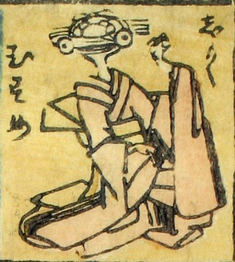

撞木；シュモク，娘；ムスメ，女；オンナ

撞木娘。撞木の柄が頭部になっており、丸い目玉がついている。振袖を着て、踊っているように見える。
著作者：芳盛／出典：親書誌：U426_nichibunken_0073：しん板化物尽し；シンパンバケモノヅクシ／日付：2006／資源識別子：U426_nichibunken_0073_0009_0000
Copyright (c)2010- International Research Center for Japanese Studies, Kyoto, Japan. All rights reserved.